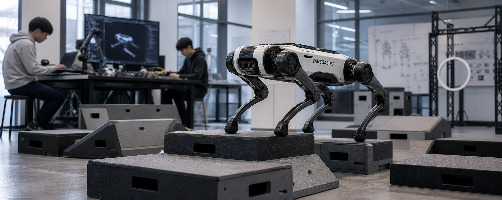

Agile Quadruped Platform
QuadrupedAgile
教育、研究、展示、開発者向けに最適化した小型四足ロボット。軽量で扱いやすく、Python SDK を使った素早い試作やデモ開発に向いています。
15kg Class
Python SDK
Education Ready
Customizable
15kg小型軽量クラス
Python素早いプロトタイピング
Demo展示・教育・研究向け
Tanegasima // Agile Developer Platform

Developer UsePython Control素早い実装とデモ開発
ScenarioLab / Campus / Expo教育・研究・展示に最適
Technical Overview
想定スペック
入門から実践開発まで扱いやすいことを優先し、教育・研究・デモ用途での持ち運びや素早い制御実装に向いた構成を想定しています。
Body Class15 kg class
研究室や展示現場で取り回ししやすい小型四足クラス。
SDKPython Native
授業、ハッカソン、試作開発で扱いやすい制御インターフェース。
Use ModeEducation / Demo
教育・研究・対外デモまで柔軟に活用しやすい設計。
CustomizationAccessory Ready
カメラ、軽量センサー、演出モジュールなどの追加を想定。
開発者フレンドリー
短いコードで歩行、姿勢制御、センサー取得を試せる構成。
教育現場に適したサイズ
机上説明から床面デモまで、一台で幅広く活用しやすい取り回し。
展示用途への拡張性
演出、案内、簡易インタラクション用途へも展開しやすい設計。
Use Case
教育・開発・展示での俊敏な実装

小さくても、試せる幅は広い
QUADRUPED AGILE は、教育プログラムや研究試作、展示会デモに向いた機体です。Python ベースでロジックを素早く組み、短いサイクルで挙動確認まで進められます。
Education Program
Developer Sandbox
Interactive Demo
Rapid Prototyping
Deployment Flow
活用イメージ
Step 01導入セットアップ
SDK、サンプル、通信設定を整えて短時間で初期起動まで実施。
Step 02動作試作
歩行、経路制御、簡易センシングや演出タスクを素早く検証。
Step 03展示・研究活用
授業、研究デモ、イベント展示、試作検証へ展開。